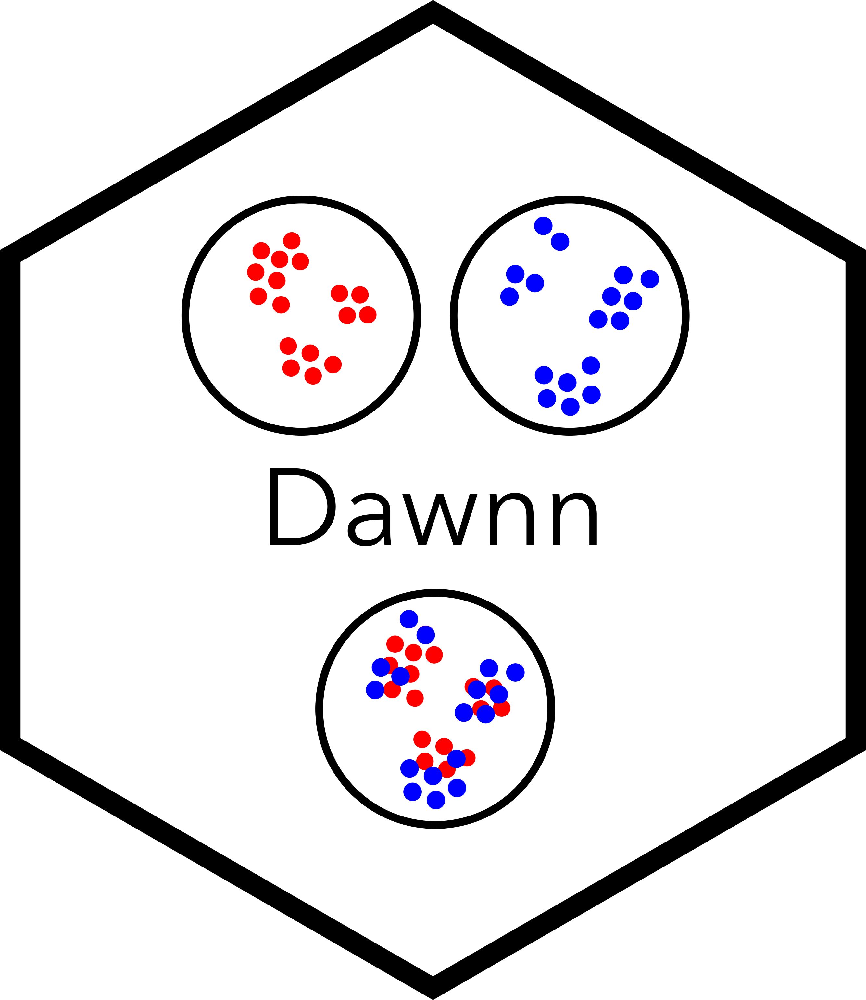

Dawnn is a method to detect differential abundance in a single-cell transcriptomic dataset.
Installation
Dawnn is currently only available from Github.
# Step 1: Install Dawnn package (may need to install `remotes` package first)
remotes::install_github("george-hall-ucl/dawnn")
# Step 2: Download Dawnn's model
# By default, model stored at ~/.dawnn/dawnn_nn_model.h5
dawnn::download_model()
# Step 3: Install Tensorflow in own conda environment
conda create -y -n tf_env -c conda-forge python=3.12.4 \
&& conda run -n tf_env pip install tensorflowQuick start
Assume that cells is a Seurat dataset with a PCA reduction, and a meta.data slot condition_name that contains the name of the condition to which each cell belongs (either Condition1 or Condition2) and where we want the label Condition1 to be associated with positive log-fold change. Dawnn requires at least 1,001 cells. We assume that TensorFlow is installed in the tf_env conda environment.
library(Seurat)
library(dawnn)
cells <- run_dawnn(cells, label_names = "condition_name",
label_pos_lfc = "Condition1", reduced_dim = "pca",
tf_conda_env = "tf_env")After run_dawnn(), the object cells has additional meta.data slots:
| Dawnn output | Description |
|---|---|
cells$dawnn_scores |
Output of Dawnn’s model (estimated probability that a cell was drawn from sample with label_pos_lfc) |
cells$dawnn_lfc |
Estimated log2-fold change in its neighbourhood. |
cells$dawnn_p_vals_[lda/gda] |
P-value associated with the hypothesis test that it is in a region of [local/global] differential abundance. |
cells$dawnn_[lda/gda]_verdict |
Boolean output of Dawnn for whether it is in a region of [local/global] differential abundance. |
vignette("dawnn") explains these outputs in more detail.
Optional parameters
The above example only specifies the required parameters. Dawnn can be run in more complex scenarios by setting the following parameters:
cells <- run_dawnn(cells = cells, label_names = "condition_name",
label_pos_lfc = "Condition1", reduced_dim = "pca",
n_dims = 20, nn_model = "~/Documents/another_nn_model.h5,
recalculate_graph = FALSE, alpha = 0.025,
verbosity = 0, seed = 42, tf_conda_env = "tf_env")These parameters are defined in vignette("dawnn").
Citation
Dawnn: single-cell differential abundance with neural networks. George T. Hall and Sergi Castellano (2023). Preprint on bioRxiv.
Contributions
Any contributions are warmly welcomed! Please feel free to submit an issue or pull request on this repository.
Releases
Licence
Copyright (C) 2023-2026 University College London
This program is free software: you can redistribute it and/or modify it under the terms of the GNU General Public License as published by the Free Software Foundation, either version 3 of the License, or (at your option) any later version.
This program is distributed in the hope that it will be useful, but WITHOUT ANY WARRANTY; without even the implied warranty of MERCHANTABILITY or FITNESS FOR A PARTICULAR PURPOSE. See the GNU General Public License for more details.
You should have received a copy of the GNU General Public License along with this program. If not, see http://www.gnu.org/licenses/.